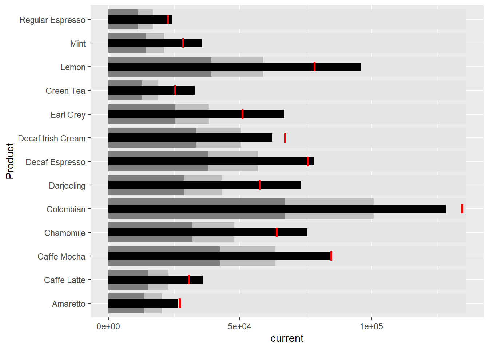

pacman::p_load(tidyverse, ggthemes, lubridate, ggthemes,
gtExtras, reactable, reactablefmtr, RODBC)Hands-on Exercise 09 - Information Dashboard
1. Overview
In the ninth lesson, we learn to create bullet charts and sparklines using ggplot2 and dashboards using Shiny.
2. Getting Started
2.1. Installing and Loading Packages
The following new R packages are introduced in this lesson in addition to other packages that have been previously introduced:
gtExtras: to create beautiful tables withgt`reactable``: to create interactive data tables on R
reactablefmtr: to streamline and enhance styling of interactive reactable tables
The packages to be used can be installed and loaded into the R environment using the p_load() function from the pacman package:
2.2. Import Data
Next, we will use the Coffee Chain data set, which is a personal database in the Microsoft Access mdb format. We will use the RODBC package to import the database query table into R.
con <- odbcConnectAccess2007('data/Coffee Chain.mdb')
coffeechain <- sqlFetch(con, 'CoffeeChain Query')
write_rds(coffeechain, "data/CoffeeChain.rds")
odbcClose(con)After writing the data into RDS format, we can read the file into R using read_rds():
coffeechain <- read_rds('data/rds/CoffeeChain.rds')
glimpse(coffeechain)Rows: 4,248
Columns: 19
$ Profit <dbl> 94, 68, 101, 30, 54, 53, 99, 0, 33, 17, 36, 111, 87, …
$ Margin <dbl> 130, 107, 139, 56, 80, 108, 171, 87, 80, 72, 76, 201,…
$ Sales <dbl> 219, 190, 234, 100, 134, 180, 341, 150, 140, 130, 140…
$ COGS <dbl> 89, 83, 95, 44, 54, 72, 170, 63, 60, 58, 64, 144, 95,…
$ `Total Expenses` <dbl> 36, 39, 38, 26, 26, 55, 72, 87, 47, 55, 40, 90, 52, 1…
$ Marketing <dbl> 24, 27, 26, 14, 15, 23, 47, 57, 19, 22, 19, 47, 30, 7…
$ Inventory <dbl> 777, 623, 821, 623, 456, 558, 1091, 435, 336, 338, 96…
$ `Budget Profit` <dbl> 100, 80, 110, 30, 70, 80, 110, 20, 40, 20, 40, 130, 1…
$ `Budget Margin` <dbl> 130, 110, 140, 50, 90, 130, 160, 80, 70, 70, 70, 210,…
$ `Budget Sales` <dbl> 220, 190, 240, 80, 150, 210, 300, 130, 120, 110, 120,…
$ `Budget COGS` <dbl> 90, 80, 100, 30, 60, 80, 140, 50, 50, 40, 50, 150, 10…
$ Date <dttm> 2012-01-01, 2012-01-01, 2012-01-01, 2012-01-01, 2012…
$ Market <chr> "Central", "Central", "Central", "Central", "Central"…
$ State <chr> "Colorado", "Colorado", "Colorado", "Colorado", "Colo…
$ `Area Code` <int> 719, 970, 970, 303, 303, 720, 970, 719, 970, 719, 303…
$ `Market Size` <chr> "Major Market", "Major Market", "Major Market", "Majo…
$ `Product Type` <chr> "Coffee", "Coffee", "Coffee", "Tea", "Espresso", "Esp…
$ Product <chr> "Amaretto", "Colombian", "Decaf Irish Cream", "Green …
$ Type <chr> "Regular", "Regular", "Decaf", "Regular", "Regular", …2.3. Data Preparation
Next, we create another table containing Sales and Budgeted Sales data aggregated at the Product level.
product <- coffeechain %>%
group_by(`Product`) %>%
summarise(`target` = sum(`Budget Sales`),
`current` = sum(`Sales`)) %>%
ungroup()3. Bullet Chart
We can use the following ggplot2 functions to create a bullet chart:
ggplot(product,
aes(Product, current)) +
geom_col(aes(Product, max(target) * 1.01),
fill = "grey90", width = 0.85) +
geom_col(aes(Product, target * 0.75),
fill = "grey75", width = 0.85) +
geom_col(aes(Product, target * 0.5),
fill = "grey50", width = 0.85) +
geom_col(aes(Product, current),
fill = "black", width = 0.35) +
geom_errorbar(aes(y= target, x = Product,
ymin = target, ymax = target),
width = 0.4, colour = 'red', size = 1) +
coord_flip()
4. Sparklines
4.1. Preparing the Data
First, we create a table recording the total sales of products by month:
sales_report <- coffeechain %>%
filter(Date >= "2013-01-01") %>%
mutate(Month = month(Date)) %>%
group_by(Month, Product) %>%
summarise(Sales = sum(Sales)) %>%
ungroup() %>%
select(Month, Product, Sales)
sales_report# A tibble: 156 × 3
Month Product Sales
<dbl> <chr> <dbl>
1 1 Amaretto 1210
2 1 Caffe Latte 1653
3 1 Caffe Mocha 3604
4 1 Chamomile 3313
5 1 Colombian 5439
6 1 Darjeeling 3178
7 1 Decaf Espresso 3493
8 1 Decaf Irish Cream 2656
9 1 Earl Grey 2867
10 1 Green Tea 1399
# ℹ 146 more rowsNext, we find the minimum, maximum, and the end-of-the-month sales:
min <- group_by(sales_report, Product) %>%
slice(which.min(Sales))
max <- group_by(sales_report, Product) %>%
slice(which.max(Sales))
eom <- group_by(sales_report, Product) %>%
filter(Month == max(Month))Lastly, we compute the 25th and 75th quantiles:
quant <- sales_report %>%
group_by(Product) %>%
summarise(quant1 = quantile(Sales, 0.25),
quant2 = quantile(Sales, 0.75)) %>%
right_join(sales_report)4.2. Creating the Plot
Now, we use the following methods to create the sparklines plot using ggplot2 methods:
ggplot(sales_report,
aes(x=Month, y=Sales)) +
facet_grid(Product ~ .,
scales = "free_y") +
geom_ribbon(data = quant,
aes(ymin = quant1, max = quant2),
fill = 'grey90') +
geom_line(size = 0.3) +
geom_point(data = min,
col = 'red') +
geom_point(data = max,
col = 'blue') +
geom_text(data = min,
aes(label = Sales),
vjust = -1) +
geom_text(data = max,
aes(label = Sales),
vjust = 2.5) +
geom_text(data = eom,
aes(label = Sales),
hjust = 0, nudge_x = 0.5) +
geom_text(data = eom,
aes(label = Product),
hjust = 0, nudge_x = 1.0) +
expand_limits(x = max(sales_report$Month) +
(0.25 * (max(sales_report$Month) -
min(sales_report$Month)))) +
scale_x_continuous(breaks = seq(1, 12, 1)) +
scale_y_continuous(expand = c(0.1, 0)) +
theme_tufte(base_size = 3, base_family = "Helvetica") +
theme(axis.title = element_blank(),
axis.text.y = element_blank(),
axis.ticks = element_blank(),
strip.text = element_blank())